想了很久还是决定回忆一下本科期间的各种事情记录下来，就当是无聊时候的消遣，想来接下来的三年也会充满心酸，偶尔翻出来看看本科时候的快乐时光也挺好。
高考毕业的暑假
2019年6月8日，考完最后一科，我大概知道自己考的并不理想，当年的卷子对我这种只会做常规题目的中等学生来说并不是很友好，清晰地记得数学的最后一题是概率，倒数第二题的导数有三角函数，参数方程的题也答得并不理想。理综的选择题也有挺多不确定的。考完后的某天鼓起勇气去对了一下答案，发现理综的选择题错了6题。于是抱着能够愉快度过接下来半个多月的想法，就全身心地投入玩耍当中。
高考成绩出来后印证了我的担忧，我开始发愁应该报什么学校，最终我的志愿顺序是大连理工、西电、南航、中国海洋、武汉理工和深圳大学，其中第一志愿的专业志愿是电信类、软工、工管、数学、建筑、土木。最终我被大连理工录取，并去了工商管理大类。录取结果出来后，我妈总是觉得志愿报的有问题，跑这么远的地方去上学，不断地指责我爸。但这也只是一些小插曲，录取之后也没想太多，马上继续投入到玩耍当中，印象中把巫师3和只狼通关了。
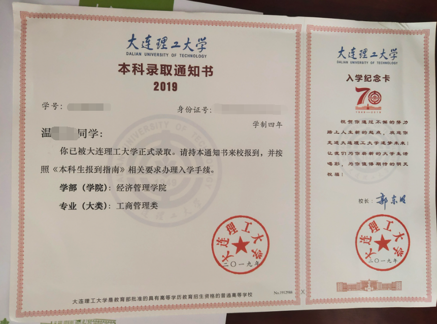
现在回想，最后悔的事情就是没在高考完的暑假把驾照给拿了，至今都还在为驾照烦恼。
八月份的时候迎新系统开了，能看到自己的班级以及寝室，当我看到我的室友有一位维吾尔族，心里还是有点担忧的，怕在生活习惯上合不来，后来证明这完全是我多虑了，他是个好人。
2019年8月27日下午2点，我乘坐上了三明北-北京站的绿皮火车，在第二天的上午六点到达北京站，开启了两天一夜的北京之旅。

北京是个拥挤的城市，从出站的那一刻，拥挤就成为了我对北京的印象，由于北京站处于中心，我和同行的家人步行前往天安门广场，19年是个特殊的年份，前往天安门广场上的路有多重安检，实际走的距离应该是直线距离的三四倍。临时预约了故宫的门票，7点开始排队。
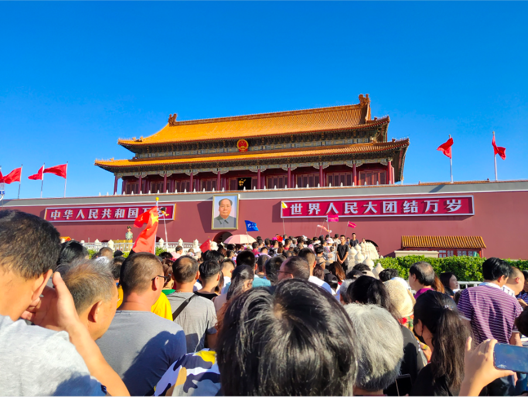
这两天一夜的路线是故宫->颐和园->圆明园->住宿->北海公园->恭王府->离开，总的来说时间还是很紧，用现在的话讲，大概就是大学生特种兵旅游吧。当时也没想过，四年后北京会成为我至少度过三年的城市。关于北京的话题之后有时间再写吧。
2019年8月29日晚上10点到达大连北站，就近在附近的宾馆住下，并在宾馆楼下的小饭馆吃饭，点了个海鲜大铁锹+两瓶大白梨，对东北菜量表示肯定。
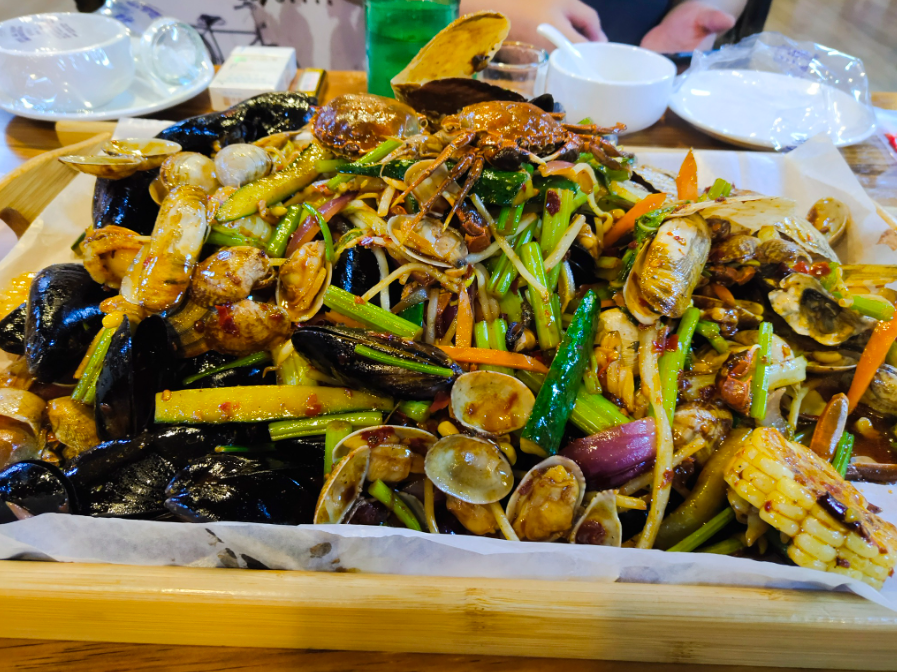
到大连的第二天，去了星海广场和周边的景点，圣亚公园，呆到下午在星海广场的肯德基吃了一顿，然后在七点半看了喷泉，之后去长春路的一家如家酒店住下。第二天去了学校附近的万达广场吃了顿饭，购买了一些生活必需品，就进学校报道了。进学校的第一餐在马桶饭左边那个档口，好像叫港式什么餐厅，吃了一顿猪排饭，大致了解了食堂差评如潮的原因。
大一上
9月
在学校的第二天早上，和室友一起出去吃饭，早餐在中心食堂，午餐在第五食堂，晚餐在民勇，把学校食堂大致吃了一遍。之后的几天和室友熟悉了一下，在4号开始军训。10号迎新晚会学校搞得不丑，这算是我第一次体会到大学和高中的区别。16号军训完，在学校的招待处和班上同学吃了一顿，18号和同学去了星海广场，印象中是我们寝室加上斜对门寝室俩人。
初入大学，我对学习并没有什么概念，每天上课就随便听听，晚上回寝打游戏。这里有个挺有意思的事情，大一的时候大家都听说不让带电脑，结果到国庆之前，班上只有我和另一位同学带了电脑(这位同学最后去了MIT读研给跪了)，到了国庆之后大家就都买了电脑。
寝室另外三个同学和我的性格还挺像的，所以很处得来，大家也很快就熟络了。我的室友分别来自河南、黑龙江和新疆，只有我一个南方人，但相处起来非常融洽，即使我后来转专业后还经常和他们保持联系。下面记录几件挺有意思的事情(9-10月)。
上了健康教育课后，我们寝室一致认为这是个大水课，第二次上这个课我们一致决定都不去(这课在下午第一节)，都在寝室里继续午睡，结果13：30突然有学生来查寝给我河南室友干醒了，于是他和查寝的同学起了争执。因为已经扣分，我们后来对寝室分数相关的事情都无所谓，直接摆烂。
第二件事，由于23舍的厕所是两个寝室共用的，两个坑，三个洗手池子，非常有岁月的痕迹。隔壁113有个藏族的，总是来我们这个坑拉屎，经常不冲，前几次还提醒一两下，后来我室友实在忍不了了，直接过去破口大骂。
由于是经管系，女生比男生还多，我们班上一共30号人，只有13个男生，关系都挺融洽，经常互相串门。
10月
在大学的第一个国庆节，由于离家比较远，没有回家，遂在大连随便走走。有个小插曲，我的黑龙江室友坐高铁回家，没赶上高铁，第二天走的。
10月1日，国庆假期的第一天，我选择在寝室摆烂，结果新疆室友和河南室友都出去玩了。结果第一天我一个人在寝室玩电脑玩了一天，到了很晚大家才回来。
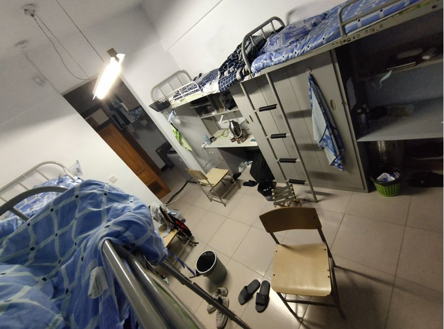
10月2号，早上睡觉，斜对门的来喊我们寝室的出去玩儿，于是我们坐1号线转2号线去了东港。先在东港海边逛了一会，之后去了威尼斯水城，客观评价这地方只适合拍照。晚上在东港看了喷泉表演后回学校附近的万达吃饭。在万达街上的火锅店点了一个4-6人套餐。
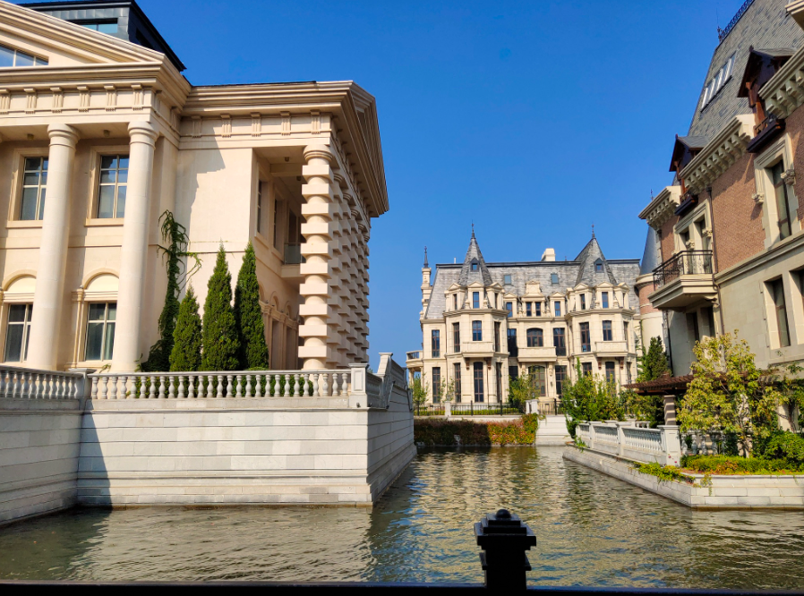
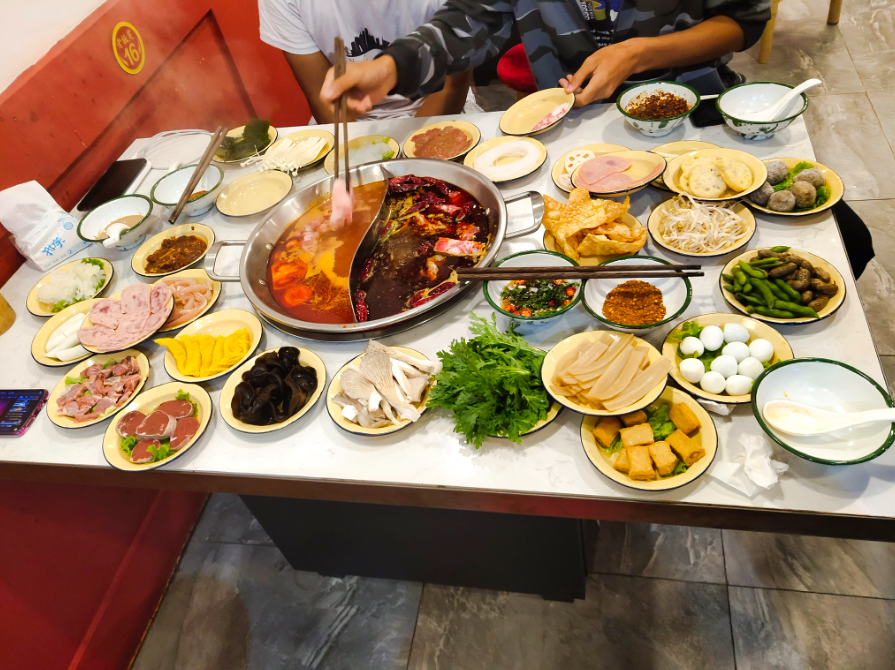
10月3日和室友去看了电影《我和我的祖国》，晚上嗯造外卖睡一天。
10月4日自己突然特种兵附体，独自1号转12号去了旅顺玩。不得不说旅顺公交非常不方便，等个公交能等半死，从旅顺地铁站走到日俄监狱都给我走半死。之后走路去旅顺中心广场嗯造麦当劳(当时1+1还是12块钱)，坐公交去旅顺博物馆，旅顺博物馆并不是想象中那样沉重，存放的基本都是近代文物，还有一具木乃伊。晚上一路坐地铁到东边。突然有高中同学来大连玩，于是在中山广场附近狂找吃的地方。中山广场附近的广场基本没吃的，都是卖奢侈品的。后来往南边钻，同学说想吃日料，就去了一家日料店，不是很起眼的店铺。印象中就点了一份寿喜锅（100块非常少），三碗牛丼饭，一份章鱼小丸子花了200多。吃完和同学逛了会，大连的风已经特别大了，凉飕飕的，坐地铁的末班车回学校。
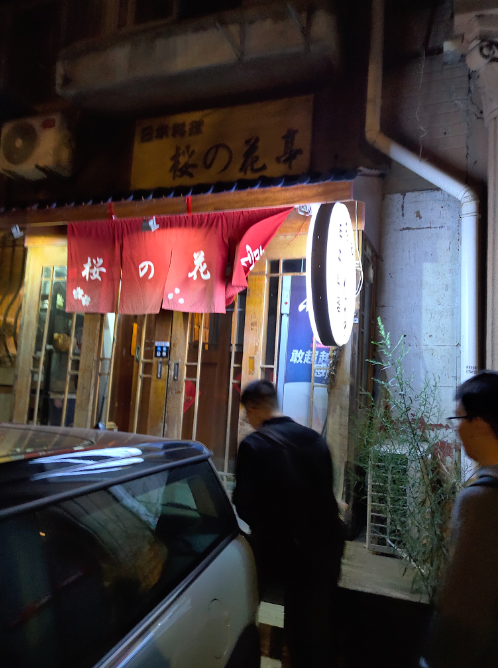
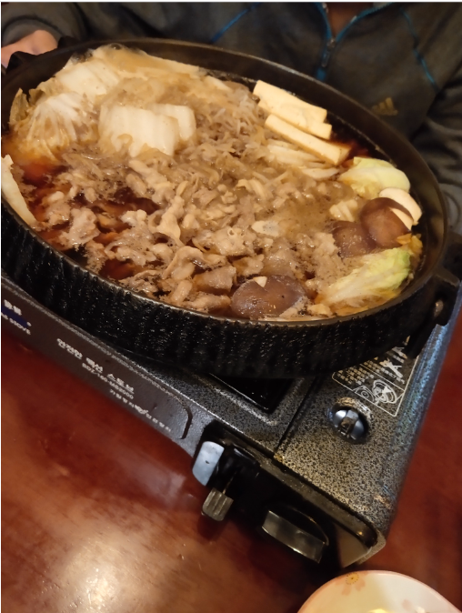
之后的三天假期都窝在学校里睡大觉，接下来的一个月也过得风平浪静，唯一记得的一件事就是课堂上的奇怪音频，送给最好的TA.mp4，当时是高数课的下课时间，给大伙都整无语了。
11月
想了一下十一月好像没有什么可以值得说的事情，翻了翻icloud照片，尽力回忆了一下。
第一件事就是去吃了明日方舟的联动套餐，唉，能天使。不得不说百胜的联动永远都是扣的要死，双人餐都不能满足一个正常食量的男生，泡菜肥牛堡味道也非常一般。
第二件事，在西部校区的大转盘那里发现了两只大雁。
第三件事，听闻了峰岚杯的事情，在11月22日的中午去排队拿票，排队的绕了福佳足球场一大圈。印象中上午第二节是高数课，好多同学都在下课的时候翘了下半节课去排队，我老老实实的上完了课再去，结果下午1点才拿到票，直接去中心食堂吃饭，然后赶到体育场上体育课。
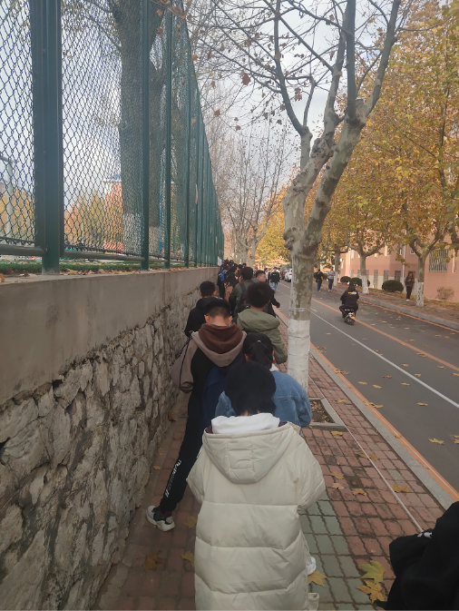
同一周的周末(24日)，去星海广场看了漫展，原本想着大城市的漫展应该会挺热闹挺有意思，结果非常失望。不过看到了山新(洛天依音源)还算不错。晚上回学校去看了峰岚杯，这也是我本科唯一一次去看的峰岚杯，恰逢新大活投入使用，整体效果还是非常好的，值得一提的是峰岚彩排的时候被我们部长叫去干活，从经管楼搬三个大鼓到新大活差点没给我累死。
11月高数还举行了一次期中考，我相信这是学校给的一次下马威，班上2/3的同学都没及格，而我考了个66分觉得不错，认为大学不过如此，没有重视学习，马上继续投入OW。
12月与1月
大连的天气慢慢变冷，又到了白色的季节。我在南方从未见过雪，所以还是挺期待的。大连的初雪在12月6日，虽说下的并不大，但还是给了我这个南方人一点小小的北国震撼。不过雪停之后雪被压实成冰面，导致我好几次都差点摔倒。
在12月20日下了一场大雪，我们班上几个男生去令希后边的小树林打雪仗，没打一会儿我便直接投降了，完全顶不住那些北方同学的打法。
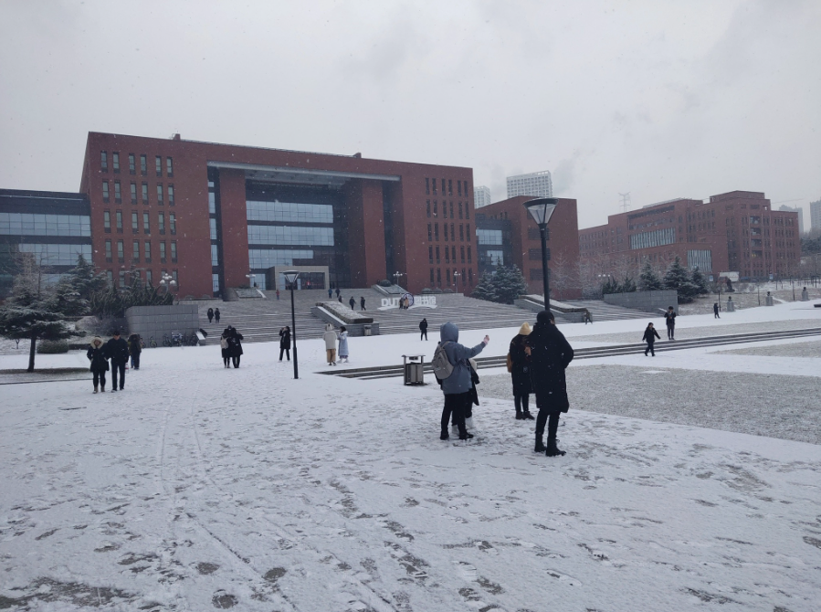
之后便是备战期末考，最折磨的就是管理学原理了，虽然我觉得课还挺有意思的，除了上课在建艺的小教室外其他都挺好。提一嘴，管理学原理老师好像是叫黄学文？在西综给我们举办了一次歌唱大会还挺有趣。课也有意思，至今我还记得霍桑实验，唉资本。
最后的考试成绩也一般，这就是没重视学习的下场！我的室友高数期中考没及格，期末考一下考了级队最高分，而我只考了83。管理学原理也只考了个平均分。就这样我的大一上结束了。
9号和捞翔在校门口自由渡吃了一顿火锅，自由渡是校友的店铺但对我们校友疑似不是很友好（价格上）。12号是我人生中第一次坐飞机，在早上6点55坐上了回家的飞机。这一去也没想过，一场改变世界线的大灾难要来了。
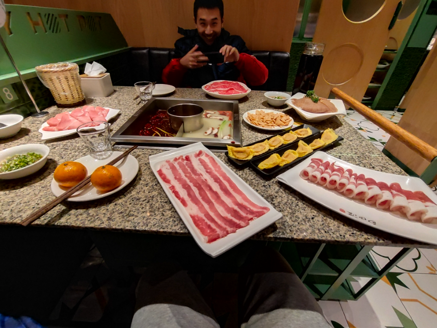
最开始看见武汉肺炎的新闻也没放在心上。在23号的时候回了一趟村，从村里带了不少菜。我对这一天记忆犹新，因为我清楚地记得这一天是除夕前一天。这一天，武汉宣布封城。我在23号蹬着自行车辗转多个超市抢购大米。24号除夕夜，25号机缘巧合亲戚给了一袋口罩，如获至宝。至此，我的大一上应该可以说的上是结束了。

总结
写下本科随笔是我临时起意，想到哪写到哪。在19年9月份远离家乡，来到大连求学，对一切事物充满新鲜感。大一上应该是我大学生活中最快乐的一个学期，没有成绩的压迫感(单纯没意识到)，大学的一切都很新鲜，不错的室友和同学。我并没有如父母猜测中的不适应，相反我对当时的生活非常满意。晚上常和室友在学校内散步聊天，快门禁前去大超吃汉堡儿(他家汉堡真不行)。在综一上课直奔西门外美食城嗯造旋转小火锅。一起翘水课在寝室睡觉。至少现在我可以确定的说，未来三年半，没有如此惬意的时候了。